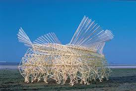

<topbar style="display:none;">
<item><a href="../index.html">Home</a></item>
<item><a href="../about.html">About</a></item>
</topbar>
<!-- This is a comment, it is ignored by the compiler/interpreter -->
## Week 1 - Precedents
Any text I write will be formatted as a paragraph. I can add local images using the syntax below:

I can add remote images like this:

If I need features that are not accessible through MarkDown, I can still use html tags. For example, resizing images:

I can also include things like YouTube videos by clicking "copy embed code" and pasting an iframe element in my file, like this:
<iframe width="600" height="400" src="https://www.youtube.com/embed/LewVEF2B_pM" title="YouTube video player" frameborder="0" allow="accelerometer; autoplay; clipboard-write; encrypted-media; gyroscope; picture-in-picture" allowfullscreen></iframe>
_Use underscores to write in italics._
Here is a list:
* Item 1
* Item 2